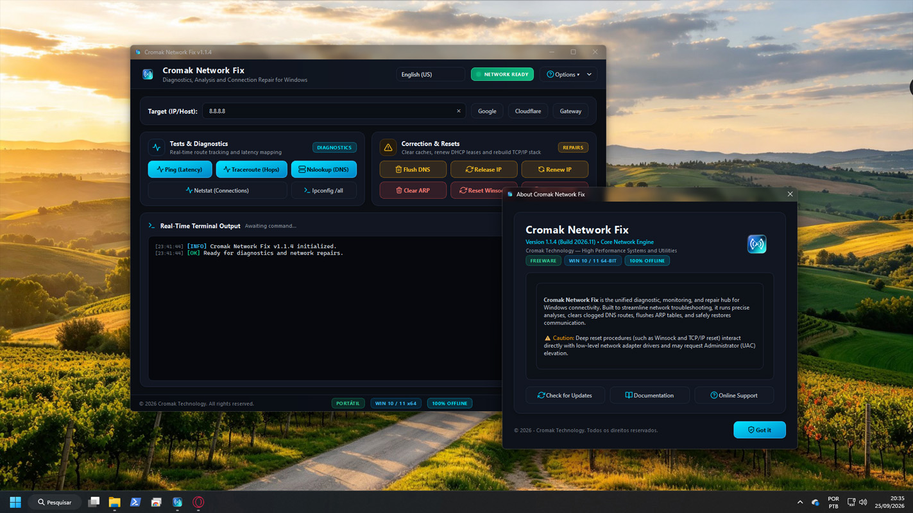
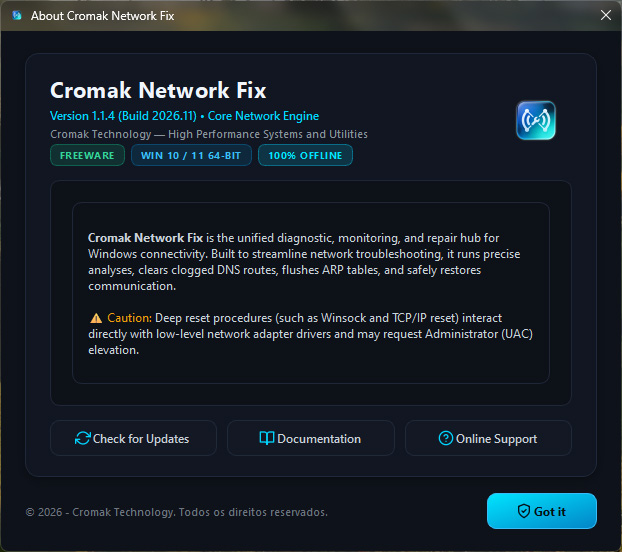

Cromak Network Fix
The Ultimate Solution for Connection Issues on Windows
Version: 1.1.4 (Freeware / Portable System Tool)

Deep Analysis, Instant Solution
Forget complex Command Prompt tutorials. We've gathered the most vital Windows network instructions into a single modern, clean, and secure interface.
🛠️ Real-Time Diagnostics
Execute Ping, Traceroute, Nslookup, and Netstat with a single click. Track the route of your packets and identify connection bottlenecks instantly through our built-in terminal.
⚡ Critical Level Repairs
Did your internet suddenly drop? Use the Flush DNS, Clear ARP Table, and Renew IP functions to re-establish communication with your router and server in seconds.
🛡️ Deep Resets
Recover Windows from severe corruptions caused by malware or failed updates. Reset the Winsock catalog and recreate the entire TCP/IP stack with maximum security.
Everything You Need in a Single Screen
The Network Fix interface was designed to put absolute control of your network in your hands, without confusing menus or visual distractions.

Integrated Terminal
View the exact output from the operating system. Command results are formatted in real-time in a comfortable reading console, preserving the technical transparency of every action taken.
Asynchronous Execution
Say goodbye to freezing apps. The logic engine uses multiple background threads to execute long tests (like Traceroute), ensuring the interface remains 100% responsive at all times.
Multiple Themes
Switch instantly between dozens of modern visual styles. From the classic bluish "Dark Mode" to high-contrast looks, the design adapts perfectly to your taste with a single click.
Lightweight, Portable, and Private
-
No Installation Required
Cromak Network Fix is distributed as a single executable format (Stand-Alone). Save it on a flash drive and use it on any PC without leaving registry traces behind.
-
Zero Data Collection
Your network, your privacy. We don't track your target IPs, don't store route logs, and don't send telemetry. It operates strictly locally and 100% offline.
-
Smart Privilege Usage
Common diagnostic tests run without requiring extra permissions. The app integrates seamlessly with Windows UAC only when deep resets (like TCP/IP) are explicitly requested.
⚠️ Conscious Use
The tools listed in the "Correction and Reset" category interact directly with the Windows routing tables and internal adapter settings. Use them primarily when your connection is experiencing real anomalies or browsing failures.

System Compatibility
Natively developed to operate on the most modern versions of Microsoft's operating system, ensuring stability on 64-bit architectures.
Download Now
Cromak Network Fix is a 100% free tool. Feel free to support the developer if you wish to keep projects like this alive.
General Use (Freeware)
- Integrated Deep Diagnostics
- Critical Reset Functions
- Portable Use (.EXE)
- Telemetry-Free
- No Dedicated Support
Project Supporter
- The software is identical, but:
- You fund new updates
- Help keep Cromak online
- Our eternal gratitude ❤️
🔒 Proudly distributed by Cromak Technology.